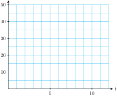

Chapter 2 Applications of Linear Models

You may have heard that mathematics is the language of science. In fact, professionals in nearly every discipline take advantage of mathematical methods to analyze data, identify trends, and predict the effects of change. This process is called mathematical modeling. A model is a simplified representation of reality that helps us understand a process or phenomenon. Because it is a simplification, a model can never be completely accurate. Instead, it should focus on those aspects of the real situation that will help us answer specific questions. Here is an example.
The world's population is growing at different rates in different nations. Many factors, including economic and social forces, influence the birth rate. Is there a connection between birth rates and education levels? The figure shows the birth rate plotted against the female literacy rate in 148 countries. Although the data points do not all lie precisely on a line, we see a generally decreasing trend: the higher the literacy rate, the lower the birth rate. The regression line provides a model for this trend, and a tool for analyzing the data. In this chapter we study the properties of linear models and some techniques for fitting a linear model to data.
Investigation 2.1. Water Level.
When sailing upstream in a canal or a river that has rapids, ships must sometimes negotiate locks to raise them to a higher water level. Suppose your ship is in one of the lower locks, at an elevation of 20 feet. The next lock is at an elevation of 50 feet. Water begins to flow from the higher lock to the lower one, raising your level by 1 foot per minute, and simultaneously lowering the water level in the next lock by 1.5 feet per minute.
-
Fill in the table
\(t\) (minutes) Lower lock water level Upper lock water level \(0\) \(\hphantom{0000}\) \(\hphantom{0000}\) \(2\) \(\hphantom{0000}\) \(\hphantom{0000}\) \(4\) \(\hphantom{0000}\) \(\hphantom{0000}\) \(6\) \(\hphantom{0000}\) \(\hphantom{0000}\) \(8\) \(\hphantom{0000}\) \(\hphantom{0000}\) \(10\) \(\hphantom{0000}\) \(\hphantom{0000}\) -
Let \(t\) stand for the number of minutes the water has been flowing.
Write an equation for \(L\text{,}\) the water level in the lower lock after \(t\) minues.
Write an equation for \(U\text{,}\) the water level in the upper lock after \(t\) minues.
-
Graph both your equations on the grid.
 When will the water level in the two locks be 10 feet apart?
When will the water level in the two locks be the same?
Write an equation you can use to verify your answer to part (5), and solve it.